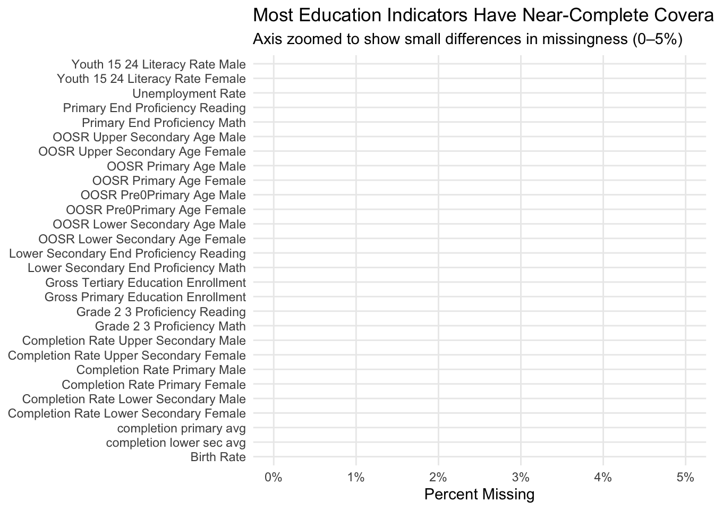
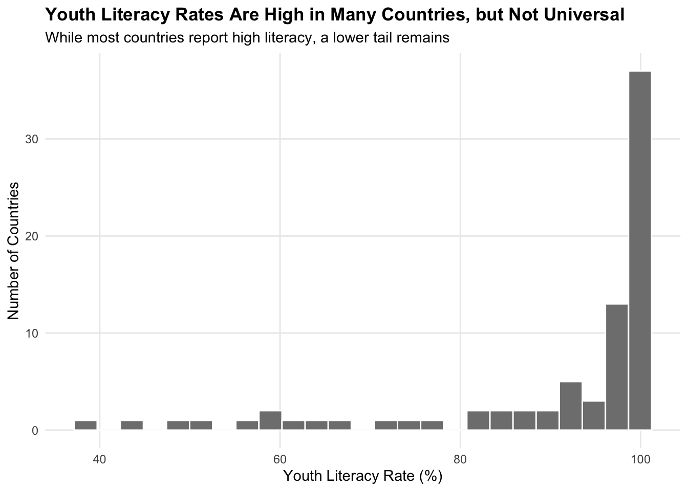
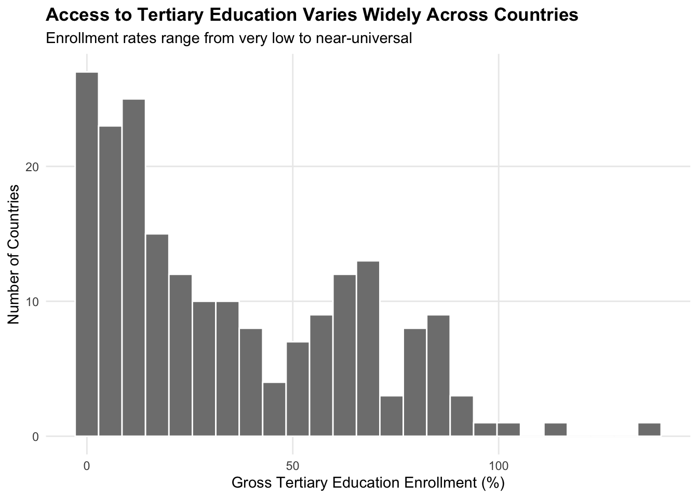
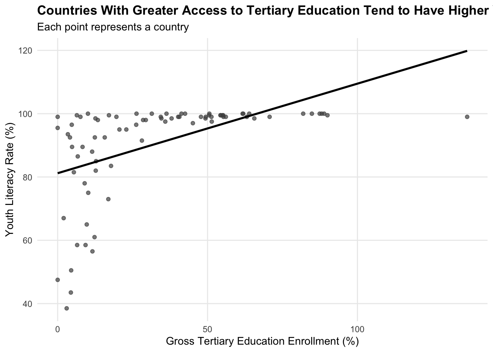
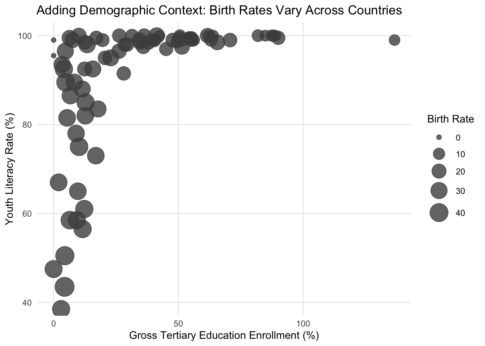
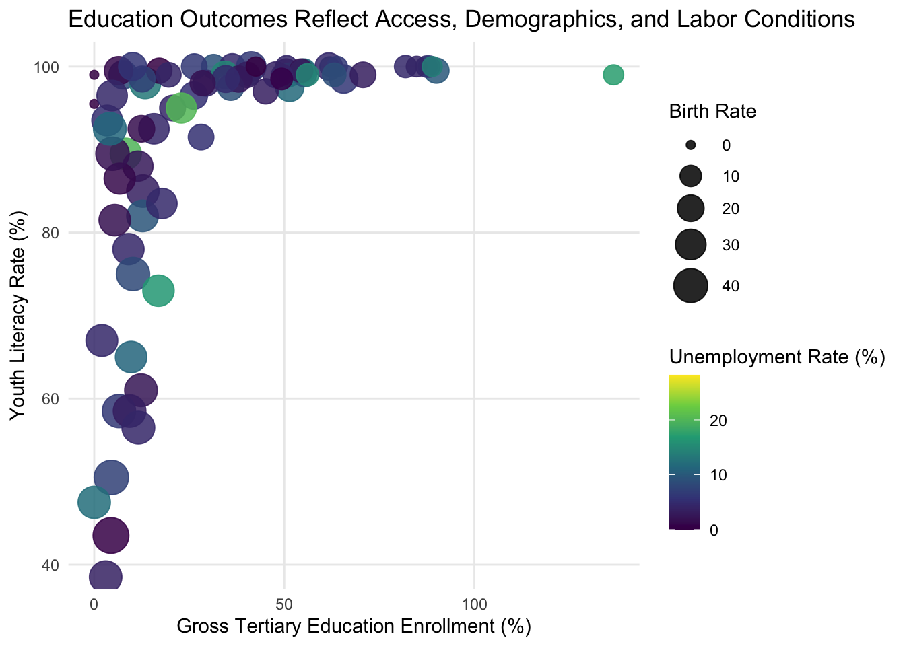

Professional Viz
About the Data
This project uses a global education dataset compiled from international education indicators and made publicly available on Kaggle. The dataset contains country-level measures related to educational access, attainment, and outcomes, including out-of-school rates, completion rates, proficiency levels, literacy rates, enrollment rates, birth rates, and unemployment. Each row represents a country, and each column represents a specific educational or demographic indicator.
The goal of this analysis is to explore how education outcomes are associated with access to higher education and broader demographic conditions. The dataset allows for comparisons across countries and supports multivariate analysis of education systems beyond a single indicator.
Set Up
Cleaning and Key Variables
Several variables in the dataset are reported separately by gender. To simplify interpretation and support clear visualization, I created average measures for youth literacy and education completion while also retaining gender gaps for potential equity-focused analysis. These derived variables allow for cleaner multivariate visualizations without losing important information.
Code
Global_Education <- Global_Education %>%
rename(country = `Countries and areas`)
Global_Education <- Global_Education %>%
mutate(
country = iconv(country, from = "", to = "UTF-8", sub = "")
)
Global_Education <- Global_Education %>%
mutate(
literacy_avg = (Youth_15_24_Literacy_Rate_Male +
Youth_15_24_Literacy_Rate_Female) / 2,
literacy_gap = Youth_15_24_Literacy_Rate_Male -
Youth_15_24_Literacy_Rate_Female,
completion_primary_avg = (Completion_Rate_Primary_Male +
Completion_Rate_Primary_Female) / 2,
completion_lower_sec_avg = (Completion_Rate_Lower_Secondary_Male +
Completion_Rate_Lower_Secondary_Female) / 2
)
Global_Education <- Global_Education %>%
mutate(
literacy_avg = ifelse(literacy_avg == 0, NA, literacy_avg)
)Exploratory Analysis
Plot 1: Missingness by Variable
Code
library(scales)
missing_summary <- Global_Education %>%
select(
starts_with("OOSR"),
starts_with("Completion"),
starts_with("Grade"),
starts_with("Primary_End"),
starts_with("Lower_Secondary_End"),
starts_with("Youth"),
Birth_Rate,
Gross_Primary_Education_Enrollment,
Gross_Tertiary_Education_Enrollment,
Unemployment_Rate
) %>%
summarise(across(everything(), ~ mean(is.na(.)))) %>%
pivot_longer(everything(),
names_to = "variable",
values_to = "pct_missing") %>%
mutate(variable = gsub("_", " ", variable))
ggplot(missing_summary,
aes(x = pct_missing,
y = reorder(variable, pct_missing))) +
geom_col(fill = "gray50") +
scale_x_continuous(labels = percent,
limits = c(0, 0.05)) +
labs(
title = "Most Education Indicators Have Near-Complete Coverage",
subtitle = "Axis zoomed to show small differences in missingness (0–5%)",
x = "Percent Missing",
y = NULL
) +
theme(panel.grid.minor = element_blank())
An examination of missing data showed that the education, enrollment, and demographic variables used in this analysis have near-complete coverage across countries. Because missingness was minimal and evenly distributed, no imputation or exclusion based on missing data was necessary. This allowed the analysis to focus on substantive relationships rather than data availability concerns.
Plot 2: Distribution of Youth Literacy Rates
Code
ggplot(Global_Education, aes(x = literacy_avg)) +
geom_histogram(
bins = 25,
fill = "gray50",
color = "white"
) +
labs(
title = "Youth Literacy Rates Are High in Many Countries, but Not Universal",
subtitle = "While most countries report high literacy, a lower tail remains",
x = "Youth Literacy Rate (%)",
y = "Number of Countries"
) +
theme(
panel.grid.minor = element_blank(),
plot.title = element_text(face = "bold")
)
Youth literacy rates are high for most countries in the dataset, with a large concentration near the upper end of the scale. However, the presence of a lower tail indicates that literacy outcomes remain uneven across countries. This variation motivates further exploration of factors associated with stronger or weaker education outcomes.
Plot 3: Distribution of Tertiary Enrollment Rates
Code
ggplot(Global_Education, aes(x = Gross_Tertiary_Education_Enrollment)) +
geom_histogram(
bins = 25,
fill = "gray50",
color = "white",
na.rm = TRUE
) +
labs(
title = "Access to Tertiary Education Varies Widely Across Countries",
subtitle = "Enrollment rates range from very low to near-universal",
x = "Gross Tertiary Education Enrollment (%)",
y = "Number of Countries"
) +
theme(
panel.grid.minor = element_blank(),
plot.title = element_text(face = "bold")
)
In contrast to youth literacy rates, access to tertiary education varies widely across countries. While some countries approach universal enrollment, many report very low participation in higher education. This uneven distribution suggests that tertiary access may help explain differences in education outcomes observed across countries.
Design Iterations
Initial exploration showed a positive relationship between tertiary enrollment and youth literacy, but substantial variation remained unexplained. To better understand this spread, I iteratively added contextual variables. Birth rate was introduced as a size encoding to capture demographic pressure, revealing that countries with higher population growth tend to cluster at lower enrollment and literacy levels. Finally, unemployment rate was added as a color encoding to incorporate labor market conditions. Each iteration added meaningful context while preserving clarity, leading to a multivariate visualization that more fully represents the complexity of education outcomes across countries.
Plot 4: Youth Literacy vs Tertiary Enrollment
Code
ggplot(Global_Education,
aes(x = Gross_Tertiary_Education_Enrollment,
y = literacy_avg)) +
geom_point(alpha = 0.7, color = "gray30", na.rm = TRUE) +
geom_smooth(method = "lm", se = FALSE, color = "black") +
labs(
title = "Countries With Greater Access to Tertiary Education Tend to Have Higher Youth Literacy",
subtitle = "Each point represents a country",
x = "Gross Tertiary Education Enrollment (%)",
y = "Youth Literacy Rate (%)"
) +
theme(
panel.grid.minor = element_blank(),
plot.title = element_text(face = "bold")
)
Countries with higher tertiary enrollment rates generally exhibit higher youth literacy. However, the wide spread in literacy outcomes among countries with low enrollment suggests that access to higher education alone does not fully explain differences in literacy. This motivates a multivariate visualization that incorporates additional demographic and economic context.
Plot 5: Adding Birth Rate as Size
Code
ggplot(Global_Education,
aes(x = Gross_Tertiary_Education_Enrollment,
y = literacy_avg,
size = Birth_Rate)) +
geom_point(alpha = 0.8, color = "gray30", na.rm = TRUE) +
scale_size_continuous(range = c(2, 9)) +
coord_cartesian(ylim = c(40, 100)) +
labs(
title = "Adding Demographic Context: Birth Rates Vary Across Countries",
x = "Gross Tertiary Education Enrollment (%)",
y = "Youth Literacy Rate (%)",
size = "Birth Rate"
) +
theme(panel.grid.minor = element_blank())
Adding birth rate as a size encoding highlights demographic pressure across countries. Countries with higher birth rates tend to cluster at lower tertiary enrollment levels and exhibit greater variation in youth literacy. This suggests that population dynamics play an important role in shaping education outcomes, particularly among countries with limited access to higher education.
Plot 6: Adding Unemployment as Color
Code
ggplot(Global_Education,
aes(x = Gross_Tertiary_Education_Enrollment,
y = literacy_avg,
size = Birth_Rate,
color = Unemployment_Rate)) +
geom_point(alpha = 0.85, na.rm = TRUE) +
scale_size_continuous(range = c(2, 9)) +
scale_color_viridis_c() +
coord_cartesian(ylim = c(40, 100)) +
labs(
title = "Education Outcomes Reflect Access, Demographics, and Labor Conditions",
x = "Gross Tertiary Education Enrollment (%)",
y = "Youth Literacy Rate (%)",
size = "Birth Rate",
color = "Unemployment Rate (%)"
) +
theme(panel.grid.minor = element_blank())
Final Visualization
Code
p <- ggplot(
Global_Education,
aes(
x = Gross_Tertiary_Education_Enrollment,
y = literacy_avg,
size = Birth_Rate,
color = Unemployment_Rate,
text = paste0("Country: ", country)
)
) +
geom_point(alpha = 0.9, na.rm = TRUE) +
scale_size_continuous(range = c(2, 9)) +
scale_color_viridis_c(end = 0.9) +
coord_cartesian(ylim = c(40, 100)) +
labs(
title = "Education Outcomes Reflect Access, Demographics, and Labor Conditions",
subtitle = "Each point represents a country. Size shows birth rate; color shows unemployment rate.",
x = "Gross Tertiary Education Enrollment (%)",
y = "Youth Literacy Rate (%)",
size = "Birth Rate",
color = "Unemployment Rate (%)",
caption = "Source: Global Education Dataset (Kaggle)"
) +
theme(
panel.grid.minor = element_blank(),
plot.title = element_text(face = "bold"),
legend.position = "right"
)
ggplotly(p, tooltip = "text")This visualization illustrates how youth literacy outcomes emerge from the interaction of education access, demographic pressure, and labor conditions. Countries with higher tertiary enrollment generally achieve high literacy, but countries with similar enrollment levels can experience different outcomes depending on birth rates and unemployment. Larger points indicate higher birth rates, reflecting demographic pressure on education systems, while color represents unemployment rates. Together, these dimensions highlight that access to higher education is important, but not sufficient on its own to explain cross-country differences in education outcomes.